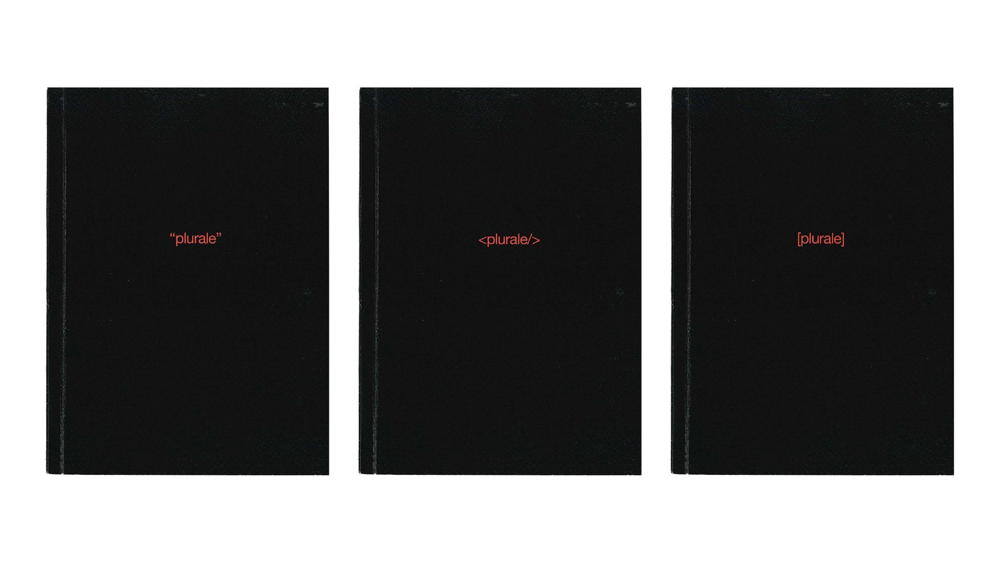
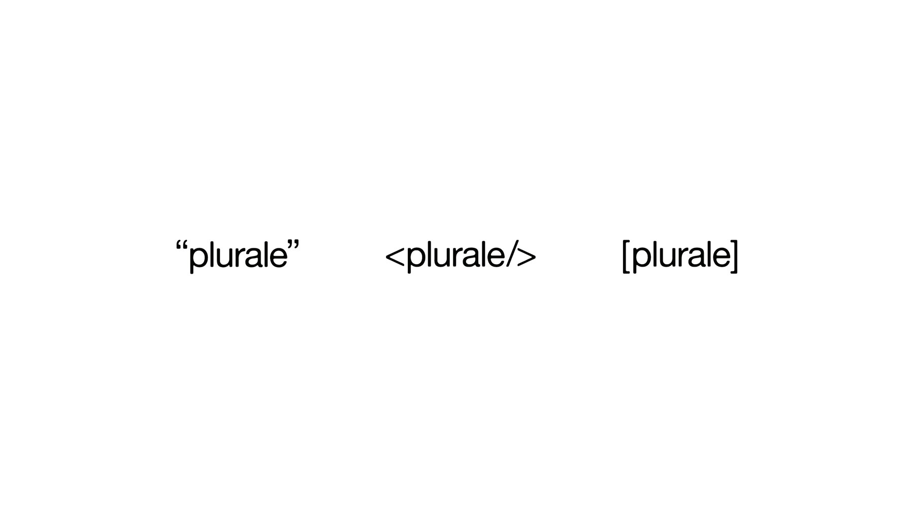
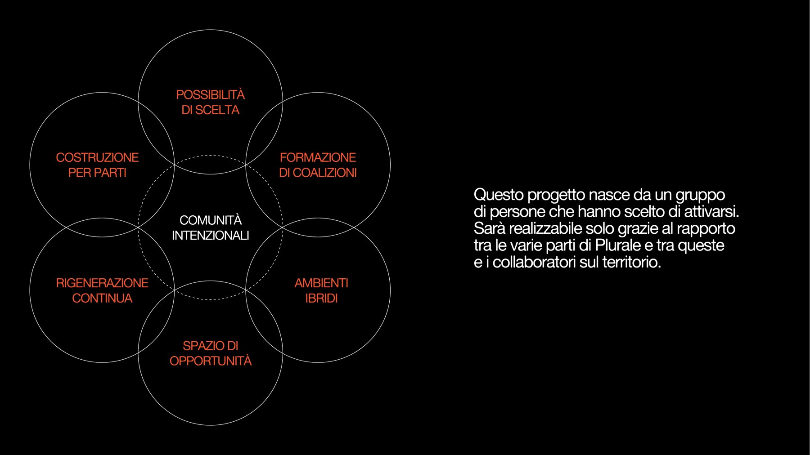

PLURALE
Dall’individualismo all’interdipendenza: strategie editoriali e pratiche sistemiche per la salute socialeOggi ci prendiamo cura del corpo e della mente come mai prima, eppure c’è un dato che continua a peggiorare: la solitudine. L’Organizzazione Mondiale della Sanità parla di un’epidemia causata dagli effetti dell’individualismo, e a sentirla di più sono i giovani adulti, tra i 20 e i 35 anni. Accelerazione, progettualità, esposizione e assenza di cura costruiscono un modello fondato sulla competizione più che sulla cooperazione, che toglie spazio alle relazioni e mina il terzo pilastro della salute, spesso dimenticato: la salute sociale. Un disagio sistemico nella sua origine, che deve essere collettivo nella sua risposta: da qui l’idea di interdipendenza, cioè riconoscere che dipendere dagli altri non è un limite alla nostra libertà, ma la condizione stessa dell’esistenza umana.
TESI
SYSTEMIC DESIGN
EDITORIA
2026

È possibile ridare tempo e forma all’interdipendenza, attraverso esperienze partecipate e collettive, in cui sospendere, anche solo per un momento, la corsa alla crescita personale?
COS’È PLURALE
Plurale: “che si riferisce a più persone o cose, che indica o esprime il concetto della molteplicità”. Il nome afferma che non esiste un solo modo per raccontare il presente, ma una molteplicità di sguardi; il payoff, per tracciare intenti comuni, orienta queste voci verso una direzione condivisa.
Plurale non è un singolo prodotto ma un sistema, pensato come una enabling solution: non risolve il problema al posto delle persone, ma crea le condizioni perché possano affrontarlo insieme. Non una cura per la solitudine, quindi, ma un dispositivo che, partendo dalla consapevolezza individuale, restituisce alle persone il tempo e lo spazio per incontrarsi e per imparare, di nuovo, a fidarsi degli altri.
Si vive su due livelli: la rivista, una lettura individuale che porta consapevolezza sulle dinamiche individualiste e performative della società; e un sistema di eventi, in cui Plurale diventa un facilitatore sociale. Al centro c’è la rivista, per le qualità che la nostra società non valorizza più: lentezza, ritualità, condivisione, responsabilità, fisicità e complessità.

LA RIVISTA
Una rivista quadrimestrale in formato 17×24 cm, rilegata in brossura, con scelte pensate per contenere i costi e renderla accessibile. Ogni numero è dedicato a un verbo che negli ultimi anni si è caricato di nuovi significati, come connettersi, recensire o condividere, e ha un proprio colore d’accento: il primo è Connettersi, in rosso.
La sovracoperta tiene insieme tre fascicoli e, aperta, diventa un poster: su un lato il verbo del numero, sull’altro il manifesto di Plurale e le istruzioni per entrare nel sistema. Tra i fascicoli non c’è gerarchia: ognuno racconta lo stesso verbo da un punto di vista diverso. “plurale” dà voce alla letteratura, con saggi e contributi di studiosi; <plurale/> raccoglie come il tema viene raccontato dai media digitali; [plurale] mette al centro le esperienze delle persone, attraverso interviste e casi studio.


UN’IDENTITÀ VARIABILE
Non imporre un ordine di lettura e, insieme, distinguere i fascicoli ha richiesto un’identità variabile. Al logotipo, un grotesk ammorbidito che ricalca le imperfezioni della stampa, si associano dei segni di punteggiatura: l’unico strumento che restituisce l’intenzione nella scrittura, che trasforma un’affermazione in una domanda o introduce una pausa.
Le virgolette sono il segno della citazione, della voce presa in prestito; i tag richiamano la sintassi del codice; le parentesi quadre sono quelle che, nei copioni, indicano i gesti e ciò che non si dice ma si mostra. Ogni nuovo verbo porta con sé il suo segno e il suo colore.



DENTRO I FASCICOLI
I fascicoli condividono la stessa struttura, due gabbie a sei e a cinque colonne, e la stessa tipografia, ma ognuno costruisce un immaginario diverso: illustrazioni e note a margine come in un libro, pop up e meme come in una pagina web, fotografie che espandono le interviste. Ogni fascicolo si apre con la definizione del verbo e un editoriale, poi articoli, rubriche di approfondimento e pubblicità progettate dalla redazione per realtà che ne condividono i valori.
Chiudono i contenuti di interazione: pagine rosse da strappare per leggere un racconto ad alta voce a qualcuno, prendere posizione su una frase senza cercare in rete, o avviare una conversazione profonda con delle carte. Sono il ponte tra la lettura individuale e il resto del sistema.


GLI EVENTI
Gli eventi seguono il modello Hero, Hub, Hygiene. Ogni numero esce con un evento di lancio, in cui i partecipanti rispondono alla domanda “cosa significa per te connettersi?” scrivendo una definizione su un segnalibro, stampando una propria fotografia come screenshot analogico o lasciando un ricordo in cambio di quello di uno sconosciuto.
Dai contenuti di interazione nascono gli eventi di mantenimento, appuntamenti fissi che scandiscono l’attesa tra un numero e l’altro: plurale “CLUB”, un club di lettura; plurale <TALK/>, un confronto pubblico con gli ospiti del numero; plurale [LAB], un laboratorio condotto da una delle realtà intervistate. L’anno si chiude con Plurale Fest, dove i lettori decidono insieme i verbi dei numeri futuri.
Ogni format si tiene sempre nello stesso luogo, che diventa parte dell’identità di Plurale e ne sostiene la rivista: un sistema pensato per Roma, ma replicabile in altre città.


LA PIATTAFORMA WEB
Il sito tiene insieme tutto il sistema: si possono acquistare la rivista e l’abbonamento, iscriversi agli eventi e rivivere quelli passati. Di ogni numero si può scaricare gratuitamente una versione digitale parziale con licenza Creative Commons, perché condividere conoscenza è una forma concreta di cura reciproca.
Il vocabolario raccoglie le parole chiave dei numeri e permette a chiunque di aggiungere la propria definizione: lo stesso gesto nato all’evento di lancio, che diventa un archivio collettivo sempre aperto.


COMUNITÀ INTENZIONALI
Plurale non risolve l’isolamento, ma prova a far riscoprire il valore della comunità attraverso esperienze condivise. Nel mondo fluido servono nuove forme di comunità, che Ezio Manzini definisce intenzionali: aperte, leggere e progettate.
Il sistema ne rispecchia i sei tratti: la possibilità di scelta, nella varietà di eventi e fascicoli; la costruzione per parti, nei tre punti di vista equivalenti; la rigenerazione continua, con nuovi partner ogni anno; lo spazio di opportunità, perché la rivista è un’occasione di dialogo; gli ambienti ibridi, tra carta, eventi e digitale; la formazione di coalizioni, da cui il progetto stesso è nato.
La domanda di partenza non trova una risposta definitiva: può solo essere praticata, numero dopo numero, incontro dopo incontro. È il senso stesso del nome: una forma grammaticale che indica più di uno, e che resta aperta a essere riscritta insieme a chi sceglierà di abitarla.
